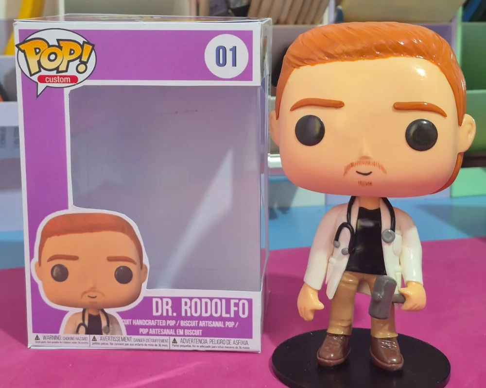

Pops personalizados
Escultura com estética caricata que se destaca pela cabeça maior e corpo compacto, criando uma versão única de cada pessoa.
Com suas fotos, personalizamos cabelo, roupas, acessórios e outros detalhes marcantes, transformando você ou alguém especial em uma miniatura.
Quero um Pop personalizado